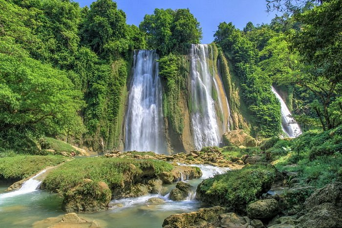

5 Rekomendasi Curug Indah di Jawa Barat
Jawa Barat, sebagai surganya alam di Indonesia, menyimpan keindahan alam yang tak terhitung jumlahnya. Salah satu daya tarik utamanya adalah curug-curugnya yang memukau, menawarkan keindahan alam yang memesona. Dari gemericik air yang menenangkan hingga panorama alam yang menakjubkan, inilah 5 rekomendasi curug terindah di Jawa Barat yang patut Anda jelajahi.
1. Curug Cikaso
Sumber : tripadvisor
Curug yang terletak di Sukabumi ini memiliki daya tarik tersendiri dengan keindahannya. Curug ini tepatnya terletak di kampung Ciniti, Desa Cibitung, Kecacamatan Surade,Kabupaten Sukabumi, Jawa Barat. Untuk menuju Curug ini kamu bisa menggunakan jasa perahu motor, atau menempuhnya dengan berjalan kaki. Memiliki tinggi sekitar 30 m serta lebar 100 m. Memiliki tiga titik aliran air dengan bermuara seperti kolam air warna hijau kebiruan menjadikannya sangat indah.
2. Curug Cikanteh

Sumber : www.rumah123.com
Selain Curug Cikaso, di Sukabumi terdapat curug indah lainya yang tak kalah dengan curug cikaso. Curug yang terletak di kawasan Geopark Ciletuh ini mempunyai tinggi 60 meter. Lokasi Curug ini tepatnya terletak di dusun Cikanteh, Desa Ciwaru,Kecamatan Ciemas, Kabupaten Sukabumi, Jawa Barat. Tiket masuk untuk menikmati keindahan curug ini juga murah banget hanya sebesar Rp 5000. Untuk biaya parkirnya sendiri pengunjung hanya perlu merogoh kocek Rp 3000 untuk kendaraan roda dua, lalu Rp 5000 untuk kendaraan roda empat.
3. Curug Citambur

Sumber : Blog.pigijo.com
Curug yang sempat viral beberapa tahun lalu ini masih menjadi primadona para pecinta keindahan alam yang doyan banget sama curug. Curug yang terletak Kabupaten Cianjur ini tepatnya di Desa Karangjaya,Kecamatan Pasirkuda ini memiliki ketinggian 130 meter. Harga tiket unutk memasuki kawasan curug citambur ini sebesar R 10.000 per orang. Untuk biaya parkir, pengunjung dikenakan Rp 3.000 untuk kendaraan roda dua, dan Rp 5.0000 untuk kendaraan roda empat.
4. Curug Cimarinjung

Sumber :tripadvisor
Satu lagi Curug yang memiliki keindahan yang luar biasa di Sukabumi khususnya masuk kedalam kawasan Geopark Ciletuh. Curug ini mempunyai tinggi 50 meter
5. Curug Ibun Pelangi

Sumber : jadesta.kemenparekraf.go.id
Kita beralih ke daerah timur Jawa Barat tepatnya ke Kabupaten Majalengka. Terdapat Curug yang sangat indah yang bernama Curug Ibun Pelangi. Curug ini biasa disebut dengan green Canyon nya Majalengka. Curug ini di apit oleh 2 tebing dengan ketinggian
Semoga lima rekomendasi curug di Jawa Barat ini memberikan inspirasi untuk menjelajahi keindahan alam yang memukau di wilayah ini. Dari gemericik air yang menenangkan hingga panorama alam yang menakjubkan, setiap curug menawarkan pengalaman yang tak terlupakan bagi para pencari petualangan. Jadikanlah petualangan ini sebagai kenangan berharga dalam perjalanan eksplorasi Anda di Jawa Barat yang mempesona.